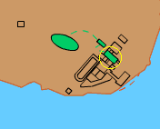

The Augustaion
This was a public square at the centre of the city. From a mile post at the entrance to the square was measured the distance to all points in the empire. It was dominated by a column which supported a statue of Augusta, Constantine's mother. Its central position in the city was demonstrated by the fact that it was surrounded by a number of important buildings, including Hagia Sophia, the senate house, the Great Palace and the hippodrome. It was reached by the main road of the city, the Mese.


The Augustaion
